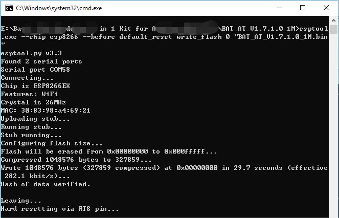
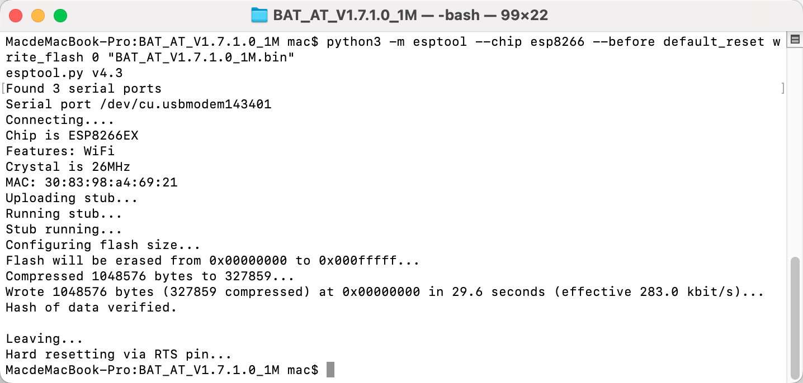
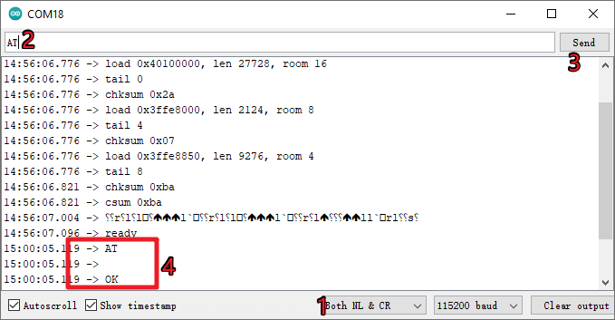
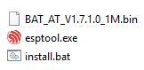

Bemerkung
Hallo und willkommen in der SunFounder Raspberry Pi & Arduino & ESP32 Enthusiasten-Gemeinschaft auf Facebook! Tauchen Sie tiefer ein in die Welt von Raspberry Pi, Arduino und ESP32 mit anderen Enthusiasten.
Warum beitreten?
Expertenunterstützung: Lösen Sie Nachverkaufsprobleme und technische Herausforderungen mit Hilfe unserer Gemeinschaft und unseres Teams.
Lernen & Teilen: Tauschen Sie Tipps und Anleitungen aus, um Ihre Fähigkeiten zu verbessern.
Exklusive Vorschauen: Erhalten Sie frühzeitigen Zugang zu neuen Produktankündigungen und exklusiven Einblicken.
Spezialrabatte: Genießen Sie exklusive Rabatte auf unsere neuesten Produkte.
Festliche Aktionen und Gewinnspiele: Nehmen Sie an Gewinnspielen und Feiertagsaktionen teil.
👉 Sind Sie bereit, mit uns zu erkunden und zu erschaffen? Klicken Sie auf [hier] und treten Sie heute bei!
Wie man die Firmware für das ESP8266-Modul erneut aufspielt
Firmware mit R4 erneut aufspielen
1. Schaltkreis aufbauen
Verbinden Sie das ESP8266 mit dem Arduino UNO R4 Board.
2. Folgenden Code auf R4 hochladen
void setup() {
Serial.begin(115200);
Serial1.begin(115200);
}
void loop() {
if (Serial.available()) { // If anything comes in Serial (USB),
Serial1.write(Serial.read()); // read it and send it out Serial1 (pins 0 & 1)
}
if (Serial1.available()) { // If anything comes in Serial1 (pins 0 & 1)
Serial.write(Serial1.read()); // read it and send it out Serial (USB)
}
}
3. Firmware aufspielen
Wenn Sie Windows verwenden, folgen Sie den untenstehenden Schritten, um die Firmware aufzuspielen.
Firmware und Brenn-Tool herunterladen.
Nach dem Entpacken erscheinen vier Dateien.
BAT_AT_V1.7.1.0_1M.bin: Die auf das ESP8266-Modul zu brennende Firmware.esptool.exe: Kommandozeilen-Utility für Windows.install_r3.bat: Befehlssatz für Windows, Doppelklick startet alle darin enthaltenen Befehle.install_r4.bat: Wieinstall_r3.bat, jedoch speziell für das UNO R4 Board.
Doppelklicken Sie auf
install_r4.bat, um den Brennvorgang zu starten. Wenn die folgende Aufforderung erscheint, wurde die Firmware erfolgreich installiert.
Bemerkung
Sollte der Brennvorgang scheitern, überprüfen Sie die folgenden Punkte:
Setzen Sie das ESP8266-Modul zurück, indem Sie den RST-Anschluss am ESP8266-Adapter mit GND verbinden und wieder trennen.
Überprüfen Sie die Verkabelung.
Stellen Sie sicher, dass Ihr Computer das Board erkannt hat und der Port frei ist.
Öffnen Sie die install.bat-Datei erneut.
Zum Aufspielen der Firmware auf einem Mac OS-System folgen Sie diesen Schritten:
Installieren Sie mit den folgenden Befehlen Esptool. Esptool ist ein Python-basiertes, Open-Source-, plattformunabhängiges Hilfsprogramm zur Kommunikation mit dem ROM-Bootloader in Espressif-Chips.
python3 -m pip install --upgrade pip python3 -m pip install esptool
Falls Esptool korrekt installiert ist, gibt ein Befehl wie
python3 -m esptooleine Meldung wie [usage: esptool] aus.Firmware herunterladen.
Nach dem Entpacken erscheinen vier Dateien.
BAT_AT_V1.7.1.0_1M.bin: Die auf das ESP8266-Modul zu brennende Firmware.esptool.exe: Kommandozeilen-Utility für Windows.install_r3.bat: Befehlssatz für Windows.install_r4.bat: Wieinstall_r3.bat, jedoch speziell für das UNO R4 Board.
Öffnen Sie ein Terminal, navigieren Sie mit
cdin den gerade heruntergeladenen Firmware-Ordner und führen Sie die folgenden Befehle aus, um die vorhandene Firmware zu löschen und die neue Firmware aufzuspielen.python3 -m esptool --chip esp8266 --before no_reset_no_sync erase_flash python3 -m esptool --chip esp8266 --before no_reset_no_sync write_flash 0 "BAT_AT_V1.7.1.0_1M.bin"
Wenn die folgende Aufforderung erscheint, wurde die Firmware erfolgreich installiert.

Bemerkung
Sollte der Brennvorgang scheitern, überprüfen Sie die folgenden Punkte:
Setzen Sie das ESP8266-Modul zurück, indem Sie den RST-Anschluss am ESP8266-Adapter mit GND verbinden und wieder trennen.
Überprüfen Sie die Verkabelung.
Stellen Sie sicher, dass Ihr Computer das Board erkannt hat und der Port frei ist.
Öffnen Sie die install.bat-Datei erneut.
4. Test
Ergänzend zur ursprünglichen Verkabelung verbinden Sie IO1 mit 3V3.
Wenn Sie das Lupensymbol (Serial Monitor) in der oberen rechten Ecke anklicken und die Baudrate auf 115200 einstellen, sollten Sie Informationen über das ESP8266-Modul sehen.

Bemerkung
Erscheint keine Meldung
ready, können Sie versuchen, das ESP8266-Modul zurückzusetzen (RST mit GND verbinden) und den Serial Monitor erneut zu öffnen.
Klicken Sie auf NEWLINE DROPDOWN BOX, wählen Sie in den Dropdown-Optionen
both NL & CR, geben SieATein. Wenn OK zurückkommt, besteht eine erfolgreiche Verbindung zwischen dem ESP8266 und dem R3-Board.
Jetzt können Sie fortfahren und mit 1.1 Konfiguration des ESP8266 den Arbeitsmodus und die Baudrate des ESP8266-Moduls einstellen.
Firmware mit R3 neu aufspielen
1. Schaltung aufbauen
Verbinden Sie das ESP8266-Modul mit dem SunFounder R3 Board.


2. Firmware brennen
Wenn Sie Windows verwenden, gehen Sie wie folgt vor:
Firmware und Brenn-Tool herunterladen.
Nach dem Entpacken stehen vier Dateien zur Verfügung.

BAT_AT_V1.7.1.0_1M.bin: Die auf das ESP8266-Modul zu brennende Firmware.esptool.exe: Ein Kommandozeilen-Programm für Windows.install_r3.bat: Befehlsdatei für Windows. Ein Doppelklick führt alle enthaltenen Befehle aus.install_r4.bat: Gleiche Funktion wieinstall_r3.bat, jedoch für das UNO R4 Board.
Doppelklicken Sie auf
install_r3.bat, um den Brennvorgang zu starten. Erscheint folgende Meldung, war der Vorgang erfolgreich.Bemerkung
Sollte der Brennvorgang fehlschlagen, überprüfen Sie bitte:
Setzen Sie das ESP8266-Modul zurück (RST am ESP8266-Adapter mit GND verbinden und wieder trennen).
Überprüfen Sie die Verkabelung.
Stellen Sie sicher, dass Ihr Computer das Board erkannt hat und der Port frei ist.
Öffnen Sie die Datei install.bat erneut.
Für Mac OS-Benutzer gilt:
Mit den folgenden Befehlen installieren Sie Esptool. Esptool ist ein plattformübergreifendes Python-Programm zur Kommunikation mit dem ROM-Bootloader von Espressif-Chips.
python3 -m pip install --upgrade pip python3 -m pip install esptool
Wenn Esptool korrekt installiert ist, sollte der Befehl
python3 -m esptooleine Meldung wie [usage: esptool] ausgeben.Firmware herunterladen.
Nach dem Entpacken stehen drei Dateien zur Verfügung.
BAT_AT_V1.7.1.0_1M.bin: Die auf das ESP8266-Modul zu brennende Firmware.esptool.exe: Ein Kommandozeilen-Programm für Windows.install_r3.bat: Befehlsdatei für Windows.install_r4.bat: Gleiche Funktion wieinstall_r3.bat, jedoch für das UNO R4 Board.
Öffnen Sie ein Terminal und verwenden Sie den Befehl
cd, um in den Firmware-Ordner zu wechseln, den Sie gerade heruntergeladen haben. Führen Sie dann den folgenden Befehl aus, um die vorhandene Firmware zu löschen und die neue Firmware neu zu brennen.python3 -m esptool --chip esp8266 --before default_reset erase_flash python3 -m esptool --chip esp8266 --before default_reset write_flash 0 "BAT_AT_V1.7.1.0_1M.bin"
Erscheint folgende Meldung, war der Vorgang erfolgreich.
Bemerkung
Sollte der Brennvorgang fehlschlagen, überprüfen Sie bitte:
Setzen Sie das ESP8266-Modul zurück (RST am ESP8266-Adapter mit GND verbinden und wieder trennen).
Überprüfen Sie die Verkabelung.
Stellen Sie sicher, dass Ihr Computer das Board erkannt hat und der Port frei ist.
Öffnen Sie die Datei install.bat erneut.
3. Test
Auf Grundlage der ursprünglichen Verkabelung, verbinden Sie IO1 mit 3V3.

Klicken Sie auf das Lupensymbol (Serial Monitor) in der oberen rechten Ecke und stellen Sie die Baudrate auf 115200 ein. Nun sollten Sie Informationen zum ESP8266-Modul sehen.
Bemerkung
Sollte die Meldung
readynicht erscheinen, können Sie versuchen, das ESP8266-Modul zurückzusetzen (RST mit GND verbinden) und den Serial Monitor erneut zu öffnen.
Wählen Sie im NEWLINE DROPDOWN BOX die Option
both NL & CRaus und geben SieATein. Erscheint die Meldung OK, ist die Verbindung zwischen ESP8266 und dem R3-Board erfolgreich hergestellt.
Jetzt können Sie die 1.1 Konfiguration des ESP8266 befolgen, um den Arbeitsmodus und die Baudrate des ESP8266-Moduls einzustellen.